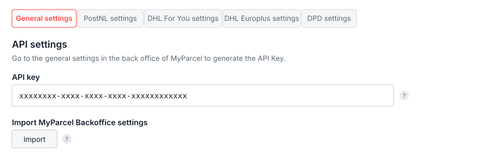
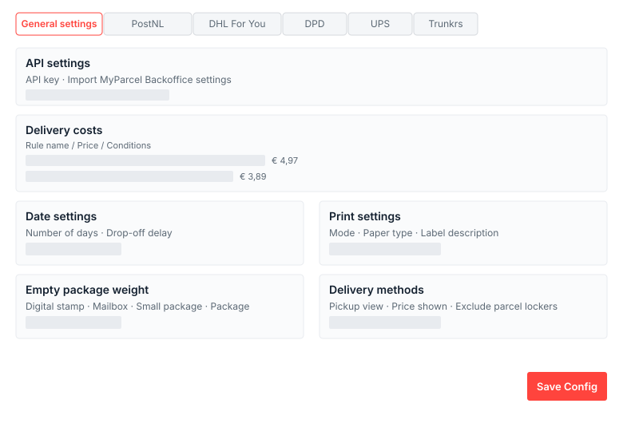
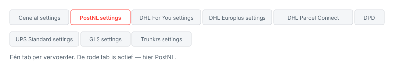
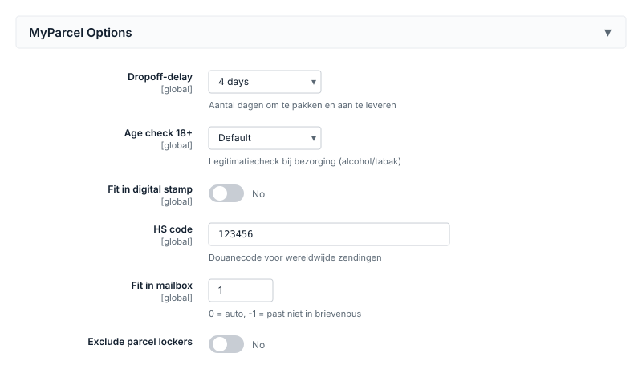
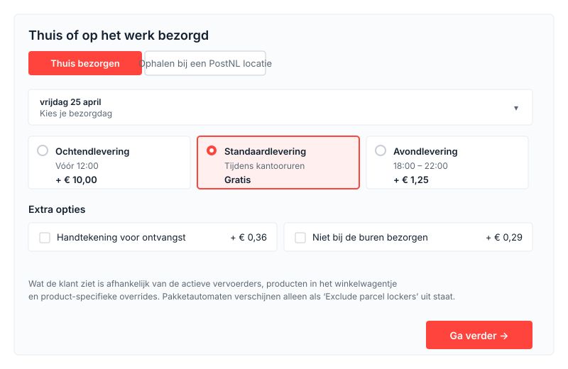

Magento 2
De complete gids voor de MyParcel-plugin voor Magento 2 — van installatie tot dagelijks gebruik. Deze handleiding loopt elk tabblad en elke instelling met je door, legt uit wanneer je iets zou veranderen en sluit af met een diagnose-checklist. Bedoeld voor shopeigenaren en shopbeheerders — geen developer-kennis nodig na de initiële installatie.
Voorbereiden in je MyParcel-account
Voordat je de plugin activeert, regel je een paar zaken in je MyParcel-backoffice. Zo voorkom je dat je halverwege moet wisselen.
- Account aanmaken. Meld je (gratis) aan via myparcel.nl/register.
- Factuur- en retouradres instellen in Shopinstellingen → Algemeen. Dit adres komt op al je labels.
- Vervoerders activeren in Shopinstellingen → Vervoerders. Alleen aangevinkte vervoerders verschijnen in de plugin.
- API key genereren onder Shopinstellingen → Integratie. Deze heb je in stap 2 nodig.
1 · Plugin installeren
De Magento-plugin wordt via Composer geïnstalleerd. Laat je developer of hostingpartij de volgende commando's uitvoeren op de server:
composer require myparcelnl/magento
bin/magento setup:upgrade
bin/magento setup:di:compile
bin/magento cache:flushGebruik je de Hyvä-checkout? Installeer dan ook de compatibility-module:
composer require hyva-themes/magento2-hyva-checkout-myparcelnl
bin/magento setup:upgradeNa installatie vind je de plugin onder Stores → Configuration → MyParcel.
2 · Account koppelen (API key)
Open Stores → Configuration → MyParcel → Settings en plak je API key bovenaan in het veld API key. Klik daarna op Save Config.
- Log in op de MyParcel-backoffice.
- Ga naar Shopinstellingen → Integratie.
- Kopieer de API key (meestal 40 tekens).
- Plak deze in Magento en sla op.
Met de knop Import MyParcel Backoffice settings haal je je contract- en vervoerderinstellingen in één klik op.

Werkt het niet?
- Niet op Save Config geklikt.
- Spatie meegekopieerd vóór of na de key.
- Key van een andere shop gebruikt — elke MyParcel-shop heeft zijn eigen key.
- Cache niet geleegd:
bin/magento cache:flush.
3 · Overzicht van de plugin
De plugin voegt drie plekken toe aan je Magento-admin:
| Waar? | Wat kun je er? |
|---|---|
| Stores → Configuration → MyParcel | Alle instellingen — Version and support en Settings (met één tab per vervoerder). |
| Sales → Orders → [order] → Print MyParcel Label | Label aanmaken voor een specifieke bestelling, inclusief aanpassen van pakkettype en opties per order. |
| Catalog → Products → [product] → MyParcel Options | Product-specifieke instellingen (dropoff-delay, age check, mailbox-fit, HS-code, etc.) die de globale defaults overschrijven. |
4 · Settings · General
De algemene tab regelt de koppeling, de verzendkostenregels, bezorgdagen, printinstellingen en hoe het MyParcel-blok in de checkout er uitziet.

API settings
- API key — Koppelt je shop aan MyParcel. Zonder geldige key werken de bezorgopties niet.
- Import MyParcel Backoffice settings — Haalt je actuele contract- en vervoerderinstellingen op uit MyParcel.
Delivery costs
Hier definieer je welke verzendprijs klanten in de checkout zien. Elke regel bestaat uit een Rule name, een Price en één of meer condities (gewicht, pakkettype, land). Je kunt bijvoorbeeld een regel "Brievenbuspakje binnen Nederland < 12kg" met prijs €4,97 aanmaken.
- Show or hide JSON textarea — geavanceerde weergave voor wie regels als JSON wil bewerken.
- Use Free Shipping — respecteer Magento's gratis-verzending-regels.
Date settings
- Number of days — Het aantal dagen vooruit dat klanten een bezorgdag kunnen kiezen. Standaard 7.
- Drop-off delay — Hoeveel werkdagen je nodig hebt tussen bestelling en aanleveren. Zet op 1 als je bestellingen pas de volgende dag verwerkt.
Print settings
- Mode — Directe verzending of eerst als concept in de MyParcel backoffice.
- Paper type — A4 (standaard printer) of A6 (labelprinter).
- Label description — Tekst op het label, met variabelen zoals
%order_nr%. - Country of origin — Herkomstland voor internationale zendingen. Standaard NL.
- Create Concept — Maak labels eerst als concept zodat je nog kunt wijzigen voordat ze definitief worden.
- Return in the box — Voegt automatisch een retourlabel bij.
- I use the following weight type — Gram of kilogram — kies de eenheid waarin je in Magento gewichten invoert.
Empty package weight
Elk pakkettype heeft een leeg-gewicht; MyParcel telt dit op bij het productgewicht.
| Pakkettype | Typisch leeg-gewicht |
|---|---|
| Package (bruine doos) | 200 – 400 g |
| Small package | 100 – 200 g |
| Mailbox (brievenbuspakje) | 50 – 100 g |
| Digital stamp | 10 – 30 g |
Delivery methods
- Show details in summary — Toont de gekozen bezorgoptie in het besteloverzicht van de klant.
- Preferred pickup locations view — Lijst of kaart als standaardweergave van afhaalpunten.
- Switching the view is allowed — Laat klanten zelf schakelen tussen lijst en kaart.
- Price shown in delivery options — Laat de meerprijs per bezorgoptie zien in de checkout.
- Exclude parcel lockers — Verberg pakketautomaten. Zet aan als je pakketten te groot zijn voor de automaten.
5 · Settings · Vervoerders
Per vervoerder een eigen tab. Welke tabs zichtbaar zijn hangt af van wat in je MyParcel-contract staat. Hieronder loop ik PostNL als voorbeeld door — DHL For You, DHL Europlus, DHL Parcel Connect, DPD, UPS, GLS en Trunkrs volgen dezelfde opbouw (met elk eigen specifieke opties).

PostNL settings
Bezorgtitels
De teksten die je klant in de checkout ziet. Laat ze op standaard staan tenzij je eigen bewoordingen wilt gebruiken.
- Delivery title — kop boven het PostNL-blok. Standaard: Thuis of op het werk bezorgd.
- Standard / Signature on receipt / Receipt code / Home address only / Priority / Morning / Evening / Mailbox / Digital stamp / Pickup title — tekst per bezorgoptie.
Drop-off days & Cut-off times
- Drop-off days — Vink de dagen aan waarop je aanlevert bij PostNL.
- Cut-off time (per dag) — Tot welk tijdstip een bestelling nog dezelfde dag meegaat. Standaard 15:30.
Default shipping options
Pas opties automatisch toe boven een drempelprijs. Gebruik dit als je bijvoorbeeld bij bestellingen boven €250 altijd een handtekening wilt.
- Automate 'Signature on receipt' / From price
- Automate 'Collect package' / From price
- Automate 'Home address only' / From price
- Automate 'Larger than 100 × 70 × 58 cm' / From price
- Automate 'Age check 18+'
Verzekering
- Insure orders from (€) — drempel waarboven automatisch verzekerd.
- Insure orders up to (NL) / up to (BE) / up to (EU) / up to (ROW) — maximumdekking per regio.
- Insure orders for percentage — verzeker een percentage van de orderwaarde (bijv. 100%).
Digital stamp settings
- Automate digital stamp — Verzend automatisch als digitale postzegel bij lichte, platte producten.
- Default weight — Standaardgewicht voor digitale-postzegelzendingen.
Mailbox settings
- Automate mailbox — Verzend automatisch als brievenbuspakje als gewicht en afmetingen passen.
- Mailbox weight — Maximumgewicht voor brievenbuspakje (standaard 2000 g).
- Priority delivery (Prio 24 uur) + Priority delivery fee.
- International mailbox — Brievenbuspakjes naar het buitenland (indien contract dit dekt).
Small Package settings
- Automate Small Package — Verzend lichte pakketten als "pakje".
- Small Package weight — Drempelgewicht.
Bezorgmomenten
- Morning delivery active / fee — PostNL ochtendlevering + meerprijs.
- Evening delivery active / fee — Avondlevering + meerprijs.
- Pickup active / fee — Ophalen bij een PostNL-locatie (afhaalpunt of pakketautomaat).
Delivery settings
- Delivery enabled — PostNL master-toggle.
- Signature on receipt / fee — Handtekening bij bezorging + meerprijs.
- Home address only / fee — Niet bij de buren + meerprijs.
- Saturday delivery / fee — Zaterdaglevering.
Andere vervoerders — verschillen in het kort
| Vervoerder | Bijzonderheden |
|---|---|
| DHL For You | Brievenbuspakjes ondersteund. Afhalen bij DHL-servicepoint. Geen ochtend/avondlevering. |
| DHL Europlus | Zakelijke EU-zendingen. Verzekering per regio (Local/BE/EU/ROW). |
| DHL Parcel Connect | Consumentenzendingen binnen Europa. Pickup mogelijk. |
| DPD | NL pakket + brievenbuspakje (sinds v4.15). Afhalen bij DPD ParcelShop. |
| UPS Standard | Internationaal zakelijk. Minder opties, 3-dagen bezorgvenster standaard. |
| GLS | NL/BE. Signature, Only recipient, Saturday delivery. Pickup bij GLS-punt. |
| Trunkrs | Snelle NL-bezorger. Receipt code, Fresh food, Frozen, Priority delivery. |
6 · MyParcel-instellingen op productniveau
Op elk product verschijnt een sectie MyParcel Options op de edit-pagina. Deze overschrijft de globale defaults uit hoofdstuk 5 per product — handig voor producten met bijzondere eisen (alcohol, verspakketten, producten die niet in een pakketautomaat passen).

- Dropoff-delay — Extra werkdagen om dit product te pakken en aan te leveren. Gebruik dit voor producten die niet op voorraad liggen (bijv. made-to-order of dropship).
- Age check 18+ — Verplicht legitimatiecheck bij bezorging. Zet aan voor alcohol, tabak, messen. Kan niet samen met ochtend-/avondlevering.
- Fit in digital stamp — Mag dit product als digitale postzegel (plat, licht)?
- HS code — Douanecode voor wereldwijde zendingen. Zoek op tarief.douane.nl.
- Fit in mailbox — Hoeveel stuks passen in één brievenbuspakje? Gebruik
0voor "automatisch op basis van gewicht",-1voor "past niet in brievenbus". - Disable delivery options — Verbergt het MyParcel-bezorgoptieblok volledig als dit product in het mandje ligt (bijv. digitale producten, cadeaubonnen).
- Exclude parcel lockers — Verbergt pakketautomaten als afhaalpunt voor dit product. Gebruik dit voor producten die niet door een automaat-loket passen.
7 · Wat je klanten in de checkout zien
Zodra de klant een bezorgadres invult, verschijnt het MyParcel-blok met bezorgopties. Welke opties er staan hangt af van: de actieve vervoerders, de producten in het winkelwagentje en de product-specifieke overrides uit hoofdstuk 6.

Bezorgopties
- Standaardlevering — bezorging tijdens kantooruren.
- Ochtendlevering — PostNL bezorgt 's ochtends (meerprijs).
- Avondlevering — tussen 18:00 en 22:00 (meerprijs).
- Zaterdaglevering — alleen zichtbaar als je dit per vervoerder hebt aangezet.
- Handtekening voor ontvangst — bezorger laat klant tekenen.
- Niet bij de buren bezorgen — alleen aan ontvanger.
- 18+ legitimatiecheck — verschijnt automatisch als een product dit vereist.
- Ophalen bij een PostNL-locatie — lijst of kaart; pakketautomaten tonen afhankelijk van Exclude parcel lockers.
- Brievenbuspakje — als het winkelwagentje binnen de maatvoering past.
- Digitale postzegel — voor platte, lichte zendingen.
- Prio 24 uur — prioriteitsbezorging (alleen indien geactiveerd).
8 · Dagelijks gebruik
Label aanmaken vanuit een order
- Ga naar Sales → Orders en open een bestelling.
- Klik op Print MyParcel Label.
- Pas eventueel pakkettype, verzekering of bezorgopties aan voor deze specifieke order.
- Klik op Create. Het label wordt in de MyParcel-backoffice aangemaakt.
Bulk-label aanmaken
- Ga naar Sales → Orders.
- Selecteer meerdere orders met de checkboxes.
- Kies onder Actions de optie Create & print MyParcel track(s).
Track & Trace in bevestigingsmail
Onder Stores → Configuration → Sales → Sales Emails → MyParcel Track zet je de tracking-link in de verzendmail. Zie FAQ voor mail-template-conflicten.
9 · Diagnose-checklist
Werkt iets niet zoals verwacht? Loop deze checklist van boven naar onder door.
| Symptoom | Waar te kijken |
|---|---|
| Geen bezorgopties in de checkout | (1) API key correct? (2) Minstens één vervoerder op Delivery enabled = Yes? (3) Bezorgadres binnen Ship to Specific Countries? (4) bin/magento cache:flush |
| Cannot select MyParcel na andere shipping method | Upgrade naar v5.5.2; dit is in recente releases verbeterd. Blijft het: MyParcel-support. |
| "This address can not be split" | Postcode-checker-plugin gebruikt? Configureer deze zo dat straat en huisnummer als aparte velden blijven bestaan. |
| "API key invalid" | Spatie in key? Key van juiste shop? Opnieuw kopiëren uit MyParcel-backoffice Shopinstellingen → Integratie. |
| "Can't get setting with path" in logs | Vervoerder staat in logging maar niet actief — onschuldige melding. Wordt verholpen in nieuwere releases. |
| Shipping methods blijven laden | Ander shipping method actief met Show Method if Not Applicable = Yes? Zet deze optie uit op de andere methoden. |
| Labels kloppen niet met instellingen | Klik Import MyParcel Backoffice settings opnieuw. Na upgrade: cache flushen. |
10 · Veelgestelde vragen
Hoe wissel ik het pakkettype voor één specifieke bestelling?
Open de order, klik Print MyParcel Label en pas in het popup-venster het pakkettype aan voordat je het label aanmaakt.
Mag ik meerdere vervoerders tegelijk gebruiken?
Ja, als ze in je MyParcel-contract staan. Activeer elke vervoerder in zijn eigen tab. Klanten zien dan meerdere bezorgblokken in de checkout.
Ik wil geen pakketautomaten aanbieden. Kan dat?
Ga naar General settings → Delivery methods → Exclude parcel lockers en zet die aan. Per product kun je dit ook regelen via het veld Exclude parcel lockers op de product-edit-pagina.
Werkt de plugin met third-party checkouts?
Officieel ondersteund zijn de standaard Magento-checkout en de Hyvä-checkout (met de hyva-themes/magento2-hyva-checkout-myparcelnl module). Andere checkouts werken mogelijk niet volledig — test altijd vóór live.
Hoe rol ik terug naar een oudere versie?
Composer: composer require myparcelnl/magento:5.4.0 gevolgd door bin/magento setup:upgrade en cache:flush. Meld de bug op github.com/myparcelnl/magento/issues.
Mijn klanten krijgen geen bezorgopties als ze postcode eerst invullen.
Bekend issue met sommige Postcode-checker plugins. Configureer de checker zo dat straat en huisnummer als aparte velden behouden blijven.
Bronnen & support
- github.com/myparcelnl/magento ↗ — broncode, releases, issues.
- developer.myparcel.nl — Magento 2 ↗ — officiële installatie- en configuratiehandleiding.
- backoffice.myparcel.nl ↗ — account, API key, facturatie.
- Contact MyParcel support — 023 - 30 30 315 · info@myparcel.nl.